7
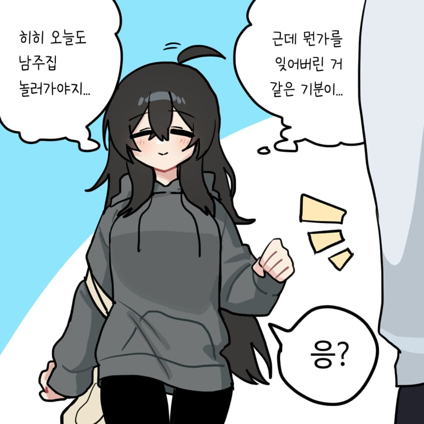
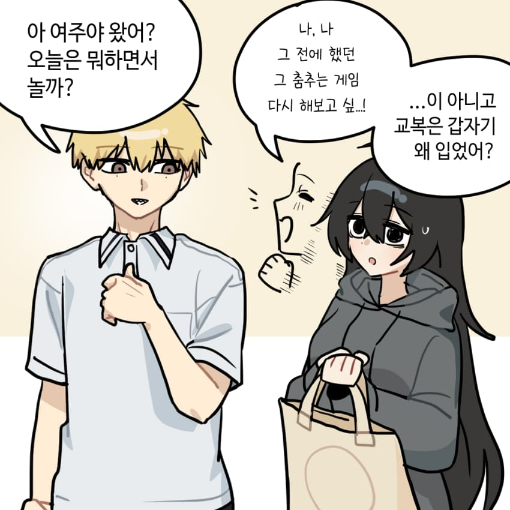
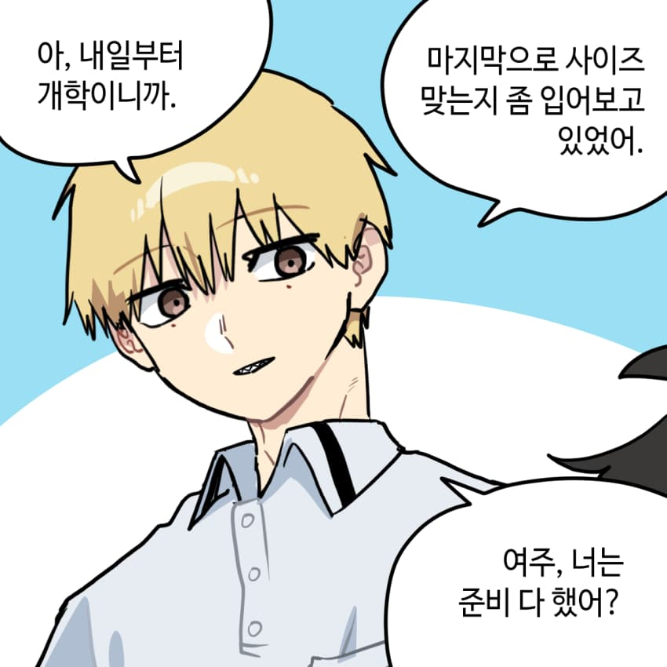
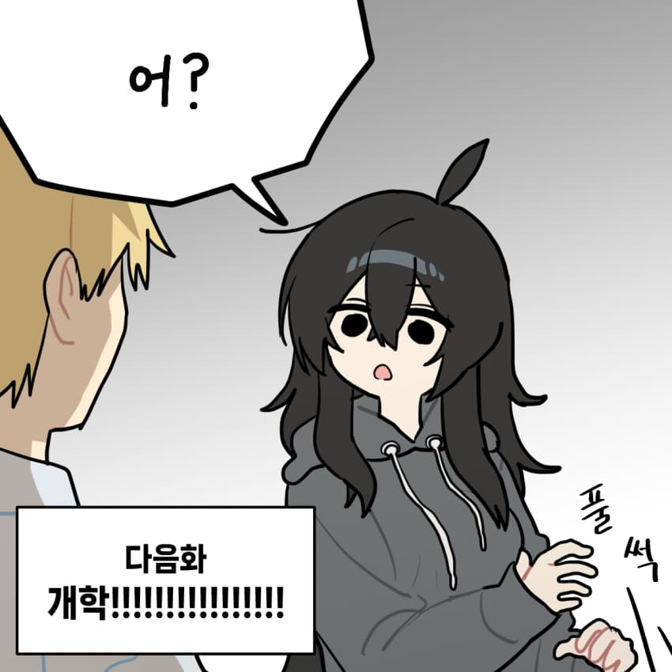
8
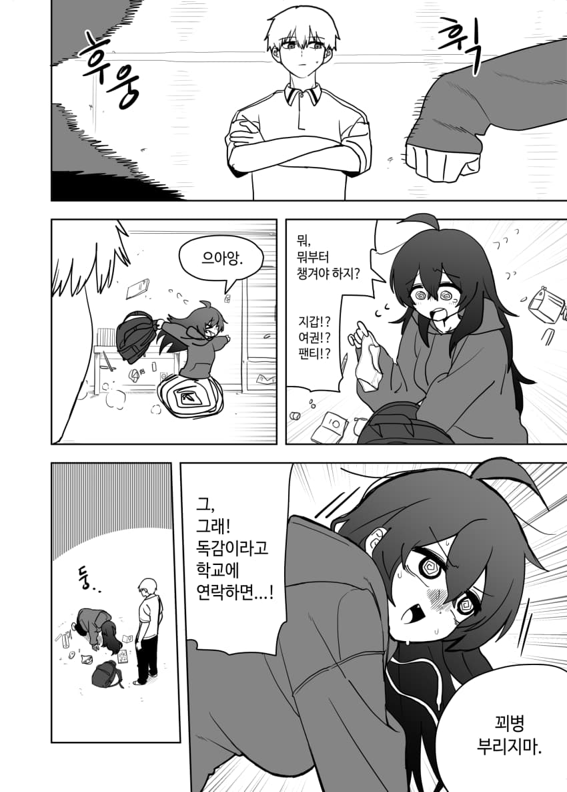
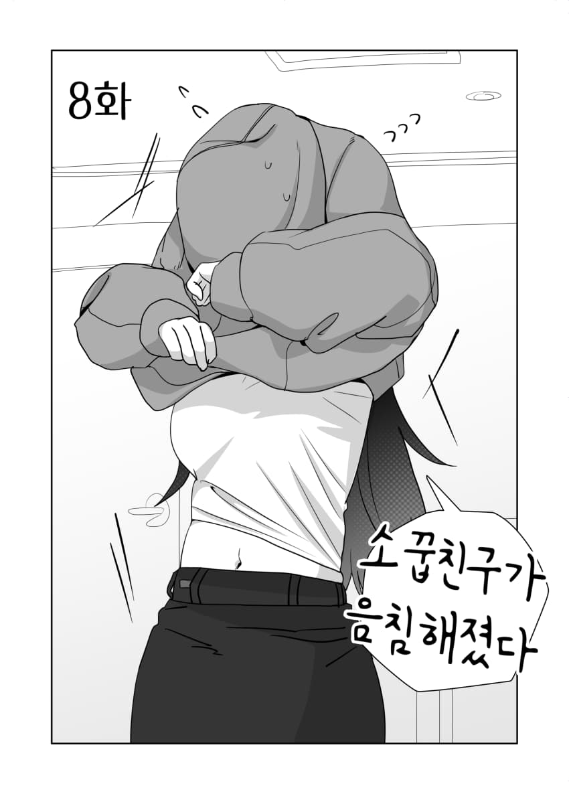
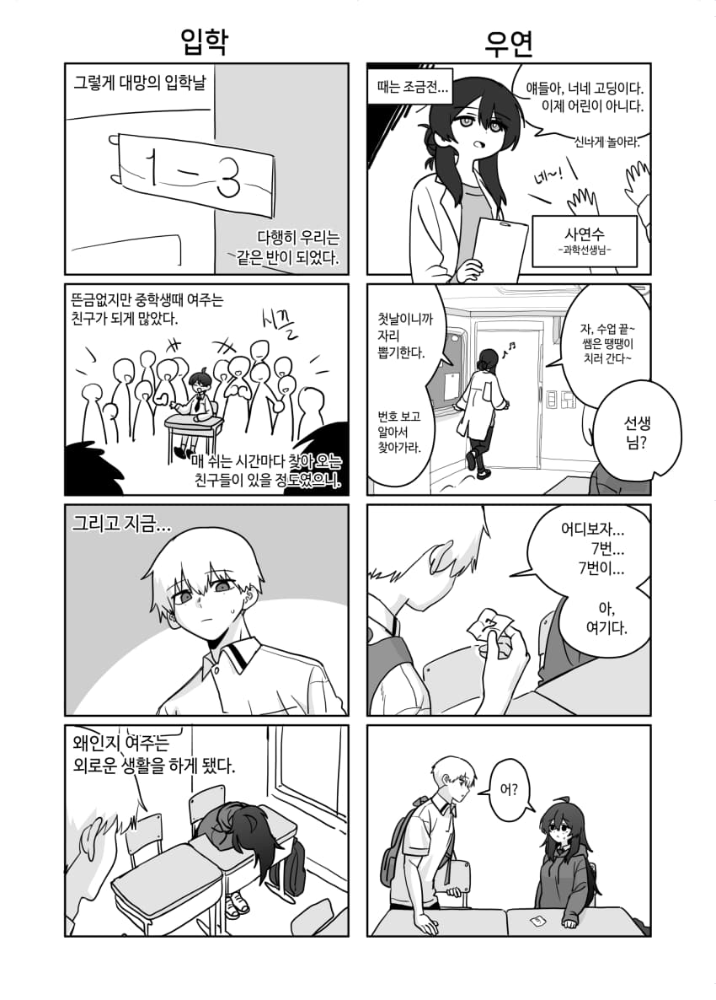
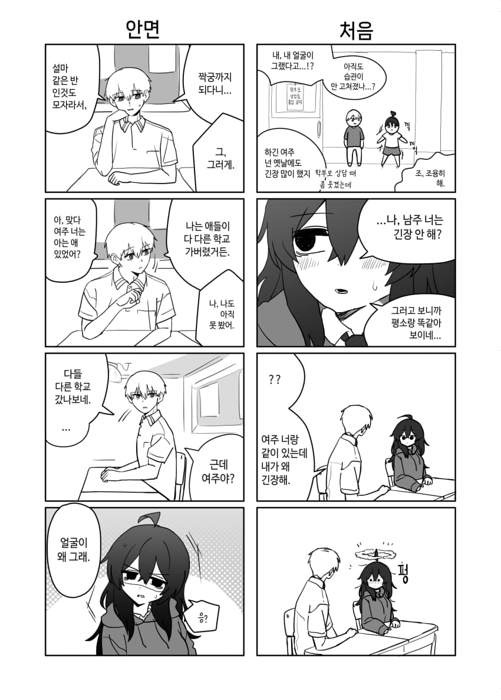
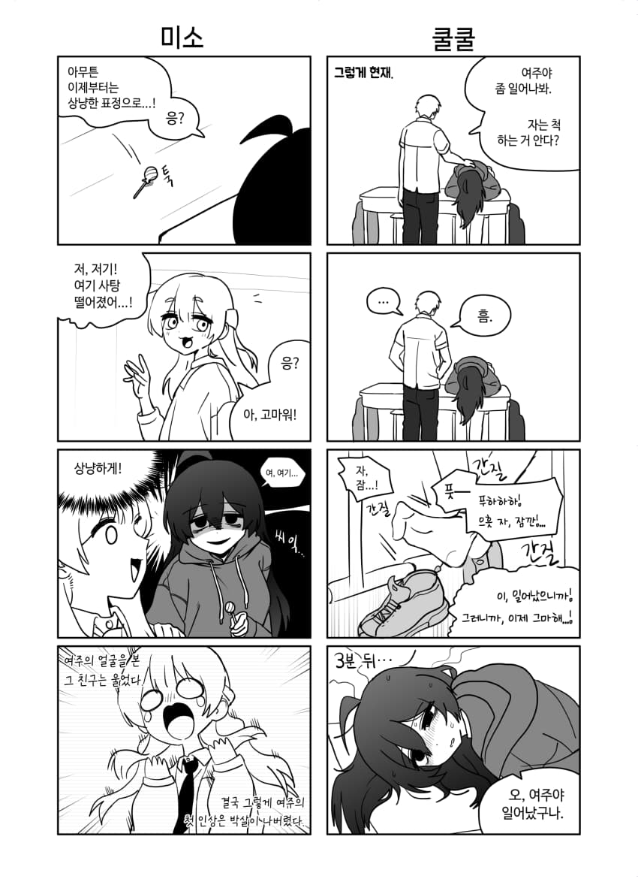
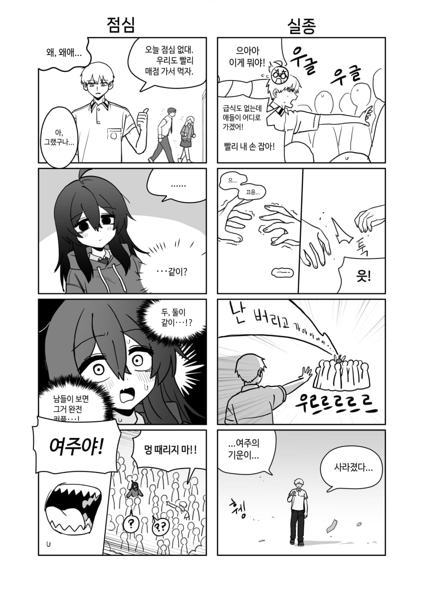
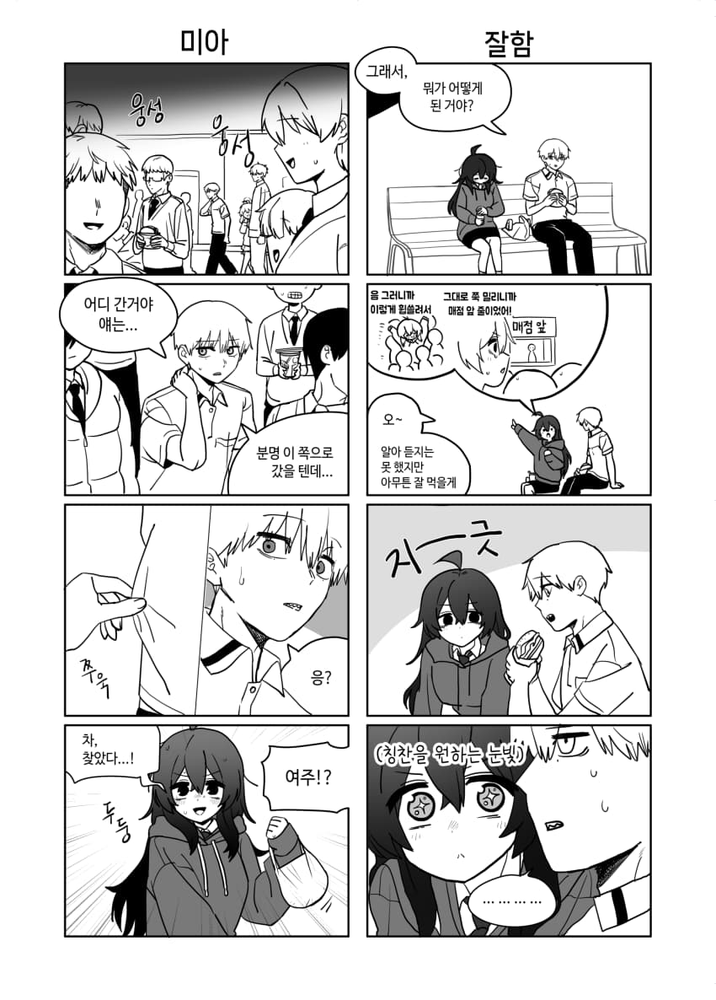
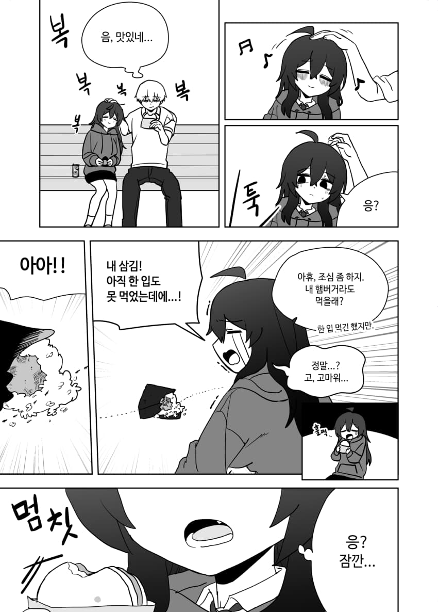
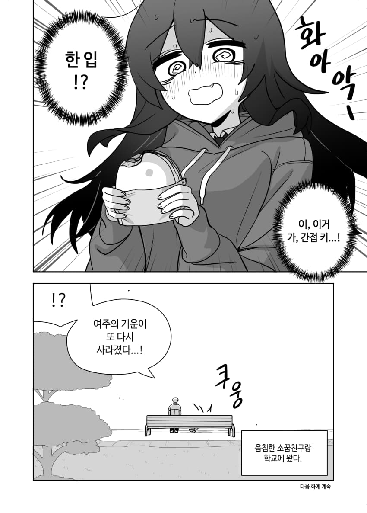
다음 화부터는 다시 4컷 만화로 돌아갑니다.
감사합니다.
7




8









다음 화부터는 다시 4컷 만화로 돌아갑니다.
감사합니다.
댓글
수집 당시 댓글 35개
가면군 · 11.05 22:17:11
Kiri · 11.05 22:27:24
ㅇㅇ · 11.05 22:28:50
뵈리레리리 · 11.05 22:34:09
· 카갤러1 · 11.05 22:57:24
· 뵈리레리리 · 11.05 22:57:49
· ㅇㅇ · 11.07 11:22:46
욘트 · 11.05 22:47:06
ㅇㅇ · 11.05 22:50:01
삭제됨 · 11.05 23:25:26
· ㅇㅇ · 11.06 01:33:19
· 삭제됨 · 11.06 01:46:40
· 삭제됨 · 11.06 02:03:00
· 삭제됨 · 11.06 11:42:17
피타라텔레스 · 11.06 00:31:25
ㅇㅇ · 11.06 01:28:00
· 카갤러2 · 11.06 03:04:42
ㅇㅇ · 11.06 03:01:10
카갤러2 · 11.06 03:06:15
삭제됨 · 11.06 03:06:54
삭제됨 · 11.06 03:07:01
삭제됨 · 11.06 03:07:08
삭제됨 · 11.06 03:07:23
상당군 · 11.06 11:18:33
크리스티아노 · 11.07 08:10:12
키나루디안마기 · 11.07 08:49:13
ㅇㅇ · 11.07 09:03:54
ㅇㅇ · 11.07 10:50:49
잼빠리 · 11.07 11:06:49
ㅇㅇ · 11.07 11:45:06
ㅇㅇ · 11.07 13:47:51
ㅇㅇ · 11.07 15:09:05
JungNu · 11.07 15:35:36
ㅇㅇ · 11.07 17:16:42
ㅇㅇ · 11.07 17:46:40